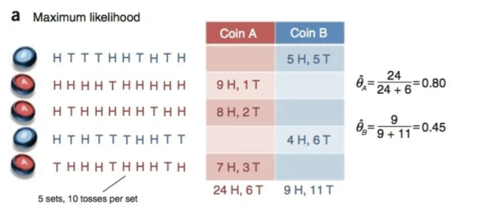
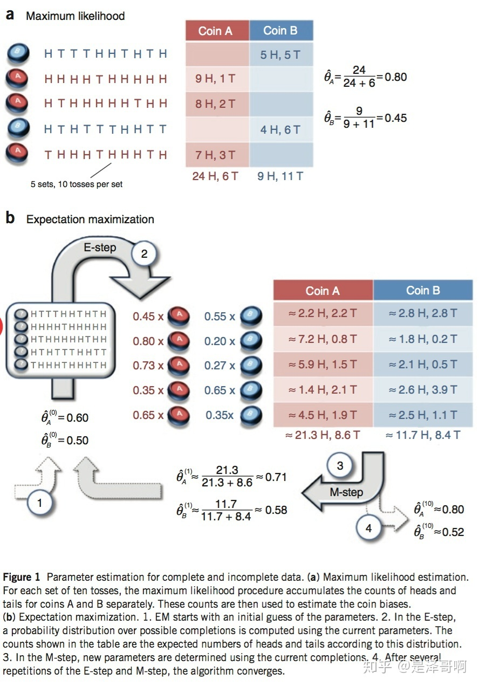

EM算法¶
EM（Expectation-Maximum）算法也称期望最大化算法，曾入选“数据挖掘十大算法”中，可见EM算法在机器学习、数据挖掘中的影响力。EM算法是最常见的隐变量估计方法，在机器学习中有极为广泛的用途，例如常被用来学习高斯混合模型（Gaussian mixture model，简称GMM）的参数；隐式马尔科夫算法（HMM）、LDA主题模型的变分推断等等。
一个最直观了解EM算法思路的是K-Means算法，见之前写的K-Means聚类算法原理。在K-Means聚类时，每个聚类簇的质心是隐含数据。我们会假设K个初始化质心，即EM算法的E步；然后计算得到每个样本最近的质心，并把样本聚类到最近的这个质心，即EM算法的M步。重复这个E步和M步，直到质心不再变化为止，这样就完成了K-Means聚类。
EM算法简介¶
我们经常需要从样本观察数据中，找出样本的模型参数，即模型的参数估计。最常用的方法就是极大似然估计法(MLE)。但是在一些情况下，我们得到的观察数据有未观察到的隐含数据，此时我们未知的有隐含数据和模型参数，因而无法直接用极大化对数似然函数得到模型分布的参数。这时就用到了EM算法,对含有隐变量的概率模型参数进行极大似然估计或极大后验估计。
EM算法是一种迭代优化策略，它的计算方法中每一次迭代都分两步，其中一个为期望步（E步），另一个为极大步（M步）。
EM算法解决这个的思路是使用启发式的迭代方法，既然我们无法直接求出模型分布参数，那么我们可以先猜想隐含数据（EM算法的E步），接着基于观察数据和猜测的隐含数据一起来极大化对数似然，求解我们的模型参数（EM算法的M步)。由于我们之前的隐藏数据是猜测的，所以此时得到的模型参数一般还不是我们想要的结果。不过没关系，我们基于当前得到的模型参数，继续猜测隐含数据（EM算法的E步），然后继续极大化对数似然，求解我们的模型参数（EM算法的M步)。以此类推，不断的迭代下去，直到模型分布参数基本无变化，算法收敛，找到合适的模型参数。
极大似然估计¶
- 参数估计(parametric estimation):已知概率密度函数的形式，但部分或全部参数未知，用样本来估计这些参数,利用极大似然估计和贝叶斯估计。
- 非参数估计(nonparametric estimation):概率密度函数的形式也未知，用样本将概率密度函数数值化地估计出来。
极大似然估计是建立在极大似然原理上的一种参数估计方法，其目的就是利用已知的样本结果，反推最有可能导致这种结果的参数值。简单说，就是通过若干次试验，观察其结果，利用试验结果得到某个参数值能够使样本出现的概率最大。注意要估计的参数是一个确定的量。
极大似然估计一般步骤:
- 1、写出似然函数:估计参数\(\theta\)的似然函数，即各样本在\(\theta\)条件下出现的联合概率密度函数
- 2、为方便计算，对似然函数取对数，将累乘计算转化成累加运算。
- 3、对取对数后的似然函数求导，另导数为0，得到似然方程。
- 4、求解似然方程，求得使似然函数最大的参数θ值
极大似然估计的特点:
1、比其他估计方法更简单。
2、收敛性：当样本数目较多时，收敛性质会更好。
3、如果假设的类条件概率模型正确，则通常能获得较好的结果。但如果假设模型出现偏差，将导致非常差的估计结果。
Jensen不等式¶
1、定义
设f是定义域为实数的函数，如果对所有的实数x，f(x)的二阶导数都大于0，那么f是凸函数。Jensen不等式定义如下：
如果f是凸函数,X是随机变量，那么:\(E[f(X)]\geq f(E[X])\)。当且仅当X是常量时，该式取等号。其中E[X]表示X的数学期望。
注：Jensen不等式应用于凹函数时，不等号方向反向。当且仅当x是常量时，该不等式取等号。
2、举例

图2中，实线f表示凸函数，X是随机变量，有0.5的概率是a，有0.5的概率是b。X的期望值就是a和b的中值，从图中可以看到\(E[f(X)]\geq f(E[X])\)成立。
EM算法的推导¶
对于n个样本观察数据\(x=(x_1,x_2,\dots,x_n)\)，找出样本的模型参数θ, 极大化模型分布的对数似然函数如下：
如果我们得到的观察数据有未观察到的隐含数据\(z=(z_1,z_2,\dots,z_n)\)，即上文中每个样本属于哪个分布是未知的，此时我们极大化模型分布的对数似然函数如下：
上面这个式子是根据\(x_i\)的边缘概率计算得来，没有办法直接求出θ。因此需要一些特殊的技巧，使用Jensen不等式对这个式子进行缩放如下：
(1)式是引入了一个未知的新的分布\(Q_i(z_i)\)，分子分母同时乘以它得到的。
(2)式是由(1)式根据Jensen不等式得到的。由于\(\sum_{z_i}Q_i(z_i)\frac{p(x_i,z_i;\theta)}{Q_i(z_i)}\)为\(\frac{p(x_i,z_i;\theta)}{Q_i(z_i)}\)的期望，且log(x)为凹函数，根据Jensen不等式可由(1)式得到(2)式。
上述过程可以看作是对\(logl(\theta)\)求了下界（\(l(\theta)=\sum_{i=1}^nlogp(x_i;\theta)\)）。对于\(Q_i(z_i)\)我们如何选择呢？假设θ已经给定，那么\(logl(\theta)\)的值取决于\(Q_i(z_i)\)和\(p(x_i,z_i)\)。我们可以通过调整这两个概率使(2)式下界不断上升，来逼近\(logl(\theta)\)的真实值。那么如何算是调整好呢？当不等式变成等式时，说明我们调整后的概率能够等价于\(logl(\theta)\)了。按照这个思路，我们要找到等式成立的条件。
如果要满足Jensen不等式的等号，则有：
由于\(Q_i(z_i)\)是一个分布，所以满足：\(\sum_zQ_i(z_i)=1\)，则\(\sum_zp(x_i,z_i;\theta)=c\)(联合上式变换得到)。
由上面两个式子，我们可以得到：
至此，我们推出了在固定其他参数θ后，\(Q_i(z_i)\)的计算公式就是后验概率，解决了\(Q_i(z_i)\)如何选择的问题。这一步就是E步，该步建立了\(l(\theta)\)的下界。
如果\(Q_i(z_i)=p(z_i|x_i;\theta)\)，则(2)式是我们包含隐藏数据的对数似然函数的一个下界。如果我们能最大化(2)式这个下界，则也是在极大化我们的对数似然函数。即我们需要最大化下式：
上式也就是我们的EM算法的M步。
EM算法流程(总结)¶
输入:观察到的数据\(x=(x_1,x_2,\dots,x_n)\)，联合分布\(p(x,z;\theta)\) ，条件分布\(p(z|x,\theta)\)，最大迭代次数J。
算法步骤:
（1）随机初始化模型参数θ的初值\(\theta_0\)。
（2）j=1,2,...,J 开始EM算法迭代：
- E步:计算联合分布的条件概率期望：
- M步:极大化\(l(\theta,\theta_j)\)得到\(\theta_{j+1}\):
- 如果\(\theta_{j+1}\)已经收敛，则算法结束。否则继续进行E步和M步进行迭代。
输出:模型参数θ。
EM算法实例¶
硬币实验概述:
1、首先要明确硬币实验本身的问题是:两块硬币A、B与我们熟知的硬币不同，它们形状不是均匀分布的，所以抛出正面的概率并不是简单的50%，现在我们想知道这两块硬币分别抛出正面的概率
2、探究的方法:做实验将A硬币抛n次，记录正面的次数\(n_h\),当n足够大时，硬币A抛出正面的概率为实验出现的频率，即\(P_A=n_h/n\)。B硬币同理。
3、区分两种情况:a情况可以观测到实验数据中每次选择的是A还是B，b情况实验数据对A和B的选择是未知的。
a情况¶
假设有两枚硬币 A 和 B，并已知实验数据属于A还是B，他们的随机抛掷的结果如下图所示：

我们很容易估计出两枚硬币抛出正面的概率：
b情况¶
我们加入隐变量，抹去每轮投掷的硬币标记，即每次抛的硬币是A还是B未知。如下表:
| Coin | Statistics |
|---|---|
| Coin* | 5H,5T |
| Coin* | 9H,1T |
| Coin* | 8H,2T |
| Coin* | 4H,6T |
| Coin* | 7H,3T |
碰到这种情况，我们该如何估计\(\theta_A\)和\(\theta_B\)的值？
我们多了一个隐变量 \(Z=(z_1,z_2,z_3,z_4,z_5)\)，代表每一轮所使用的硬币，我们需要知道每一轮抛掷所使用的硬币这样才能估计\(\theta_A\)和\(\theta_B\)的值，但是估计隐变量 Z 我们又需要知道\(\theta_A\)和\(\theta_B\)的值，才能用极大似然估计法去估计出 Z。这就陷入了一个鸡生蛋和蛋生鸡的问题。
其解决方法就是先随机初始化\(\theta_A\)和\(\theta_B\)，然后用去估计 Z， 然后基于 Z 按照最大似然概率去估计新的\(\theta_A\)和\(\theta_B\)，循环至收敛。
b情况计算:
随机初始化\(\theta_A=0.6\)和\(\theta_B=0.5\)
对于第一轮来说，如果是硬币 A，得出的 5 正 5 反的概率为：\(0.6^5*0.4^5\);如果是硬币 B，得出的 5 正 5 反的概率为：\(0.5^5*0.5^5\)。我们可以算出使用是硬币 A 和硬币 B 的概率分别为：
可以得到1到5次实验数据属于A或B的概率如下表：
| No. | Coin A | Coin B |
|---|---|---|
| 1 | 0.45 | 0.55 |
| 2 | 0.80 | 0.20 |
| 3 | 0.73 | 0.27 |
| 4 | 0.35 | 0.65 |
| 5 | 0.65 | 0.35 |
从期望的角度来看，对于第一轮抛掷，使用硬币 A 的概率是 0.45，使用硬币 B 的概率是 0.55。同理其他轮。这一步我们实际上是估计出了 Z 的概率分布，这部就是 E-Step。
结合硬币 A 的概率和上一张投掷结果，我们利用期望可以求出硬币 A 和硬币 B 的贡献。以第二轮硬币 A 为例子，计算方式为：
于是得到类似于不含隐变量的，已知A，B标记的实验数据表，如下：
| No. | Coin A | Coin B |
|---|---|---|
| 1 | 2.2H,2.2T | 2.8H,2.8T |
| 2 | 7.2H,0.8T | 1.8H,0.2T |
| 3 | 5.9H,1.5T | 2.1H,0.5T |
| 4 | 1.4H,2.1T | 2.6H,3.9T |
| 5 | 4.5H,1.9T | 2.5H,1.1T |
| total | 21.3H,8.6T | 11.7H,8.4T |
然后用极大似然估计来估计新的\(\theta_A\)和\(\theta_B\)。
这步就对应了 M-Step，重新估计出了参数值。
如此反复迭代，我们就可以算出最终的参数值。
上述全部过程对应下图：

EM算法收敛性¶
EM算法可以保证收敛到一个稳定点，即EM算法是一定收敛的。
EM算法可以保证收敛到一个稳定点，但是却不能保证收敛到全局的极大值点，因此它是局部最优的算法，当然，如果我们的优化目标\(l(\theta,\theta_l)\)是凸的，则EM算法可以保证收敛到全局最大值，这点和梯度下降法这样的迭代算法相同。
证明过程如下：
EM算法-刘建平